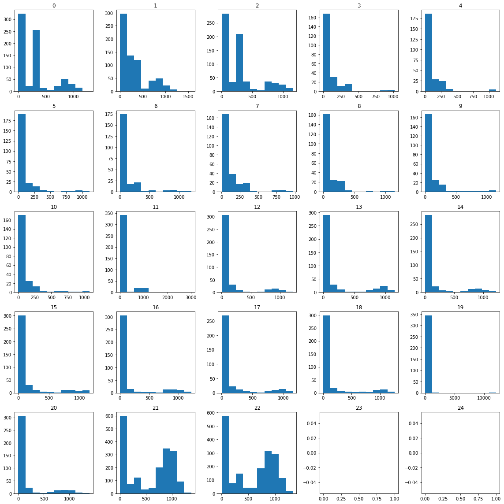
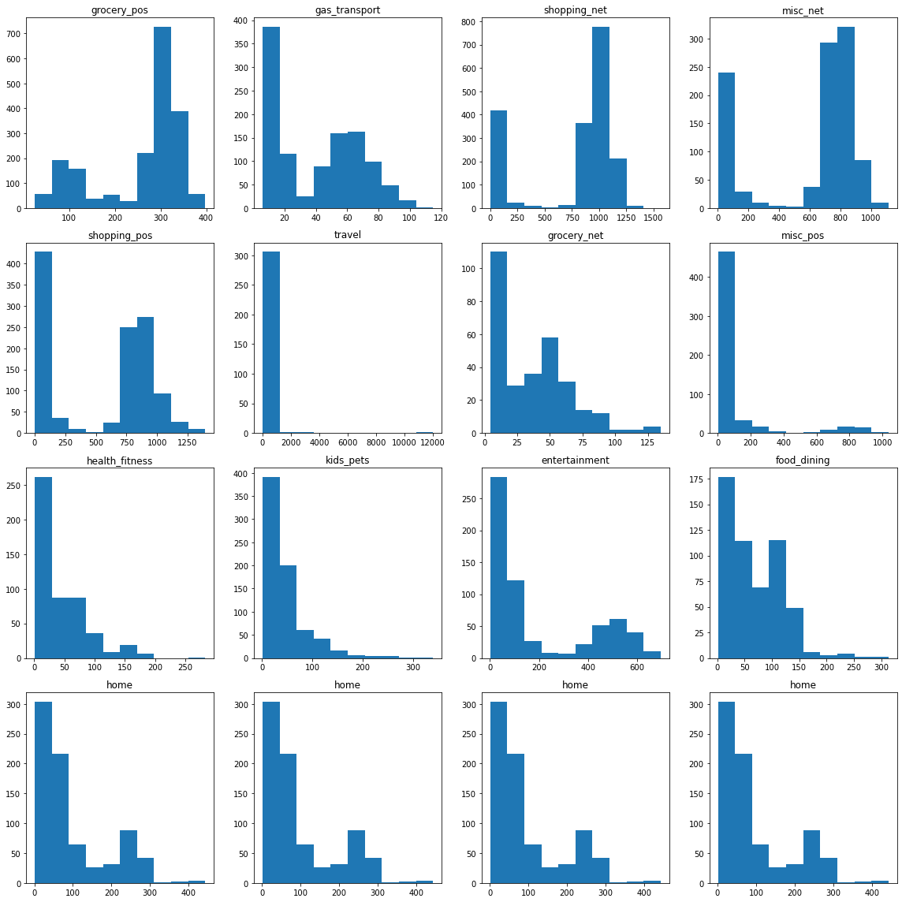

import numpy as np
import pandas as pd
import matplotlib.pyplot as plt
import sklearn
# from ctgan import CTGAN
# from ctgan import load_demo
from sklearn import model_selection # split함수이용
from sklearn import ensemble # RF,GBM
from sklearn import metrics Import
def down_sample_textbook(df):
df_majority = df[df.is_fraud==0].copy()
df_minority = df[df.is_fraud==1].copy()
df_maj_dowsampled = sklearn.utils.resample(df_majority, n_samples=len(df_minority), replace=False, random_state=42)
df_downsampled = pd.concat([df_minority, df_maj_dowsampled])
return df_downsampledref: https://miruetoto.github.io/yechan3/posts/3_Researches/BORAM/2023-07-03-CTGAN_%EC%8B%A0%EC%9A%A9%EC%B9%B4%EB%93%9C.html
Data
fraudTrain = pd.read_csv("fraudTrain.csv").iloc[:,1:]
_df1 = fraudTrain[fraudTrain["is_fraud"] == 0].sample(frac=0.20, random_state=42)
_df2 = fraudTrain[fraudTrain["is_fraud"] == 1]
df02 = pd.concat([_df1,_df2])
df50 = down_sample_textbook(df02)
_df50 = df50.assign(Date=list(map(lambda x: x.split(' ')[0],df50['trans_date_trans_time'])),Time=list(map(lambda x: x.split(' ')[1],df50['trans_date_trans_time'])))_df50| trans_date_trans_time | cc_num | merchant | category | amt | first | last | gender | street | city | ... | city_pop | job | dob | trans_num | unix_time | merch_lat | merch_long | is_fraud | Date | Time | |
|---|---|---|---|---|---|---|---|---|---|---|---|---|---|---|---|---|---|---|---|---|---|
| 2449 | 2019-01-02 1:06 | 4.613310e+12 | fraud_Rutherford-Mertz | grocery_pos | 281.06 | Jason | Murphy | M | 542 Steve Curve Suite 011 | Collettsville | ... | 885 | Soil scientist | 1988-09-15 | e8a81877ae9a0a7f883e15cb39dc4022 | 1325466397 | 36.430124 | -81.179483 | 1 | 2019-01-02 | 1:06 |
| 2472 | 2019-01-02 1:47 | 3.401870e+14 | fraud_Jenkins, Hauck and Friesen | gas_transport | 11.52 | Misty | Hart | F | 27954 Hall Mill Suite 575 | San Antonio | ... | 1595797 | Horticultural consultant | 1960-10-28 | bc7d41c41103877b03232f03f1f8d3f5 | 1325468849 | 29.819364 | -99.142791 | 1 | 2019-01-02 | 1:47 |
| 2523 | 2019-01-02 3:05 | 3.401870e+14 | fraud_Goodwin-Nitzsche | grocery_pos | 276.31 | Misty | Hart | F | 27954 Hall Mill Suite 575 | San Antonio | ... | 1595797 | Horticultural consultant | 1960-10-28 | b98f12f4168391b2203238813df5aa8c | 1325473523 | 29.273085 | -98.836360 | 1 | 2019-01-02 | 3:05 |
| 2546 | 2019-01-02 3:38 | 4.613310e+12 | fraud_Erdman-Kertzmann | gas_transport | 7.03 | Jason | Murphy | M | 542 Steve Curve Suite 011 | Collettsville | ... | 885 | Soil scientist | 1988-09-15 | 397894a5c4c02e3c61c784001f0f14e4 | 1325475483 | 35.909292 | -82.091010 | 1 | 2019-01-02 | 3:38 |
| 2553 | 2019-01-02 3:55 | 3.401870e+14 | fraud_Koepp-Parker | grocery_pos | 275.73 | Misty | Hart | F | 27954 Hall Mill Suite 575 | San Antonio | ... | 1595797 | Horticultural consultant | 1960-10-28 | 7863235a750d73a244c07f1fb7f0185a | 1325476547 | 29.786426 | -98.683410 | 1 | 2019-01-02 | 3:55 |
| ... | ... | ... | ... | ... | ... | ... | ... | ... | ... | ... | ... | ... | ... | ... | ... | ... | ... | ... | ... | ... | ... |
| 363827 | 2019-06-17 19:30 | 2.475090e+15 | fraud_Frami Group | entertainment | 81.13 | John | Miller | M | 153 Mccullough Springs Apt. 857 | Lamberton | ... | 1507 | Land/geomatics surveyor | 1993-10-12 | c66cb411019c7dfd4d89f42a1ba4765f | 1339961448 | 44.212695 | -95.661879 | 0 | 2019-06-17 | 19:30 |
| 140154 | 2019-03-17 14:33 | 2.131550e+14 | fraud_Bahringer-Streich | food_dining | 55.00 | Christopher | Sheppard | M | 39218 Baker Shoals | Bristow | ... | 965 | Horticultural therapist | 1982-02-10 | 316b9d25b9fa7d08a6831b7dab6634cd | 1331994839 | 38.394240 | -86.413557 | 0 | 2019-03-17 | 14:33 |
| 860597 | 2019-12-17 12:31 | 2.280870e+15 | fraud_Lubowitz-Walter | kids_pets | 8.12 | Katherine | Cooper | F | 3854 Lauren Springs Suite 648 | Oakford | ... | 530 | Transport planner | 1967-09-23 | d92e9e63d9b24c3ccb92d05cba4cac54 | 1355747517 | 39.695248 | -89.853063 | 0 | 2019-12-17 | 12:31 |
| 29341 | 2019-01-18 9:20 | 4.878360e+15 | fraud_Denesik and Sons | shopping_pos | 3.52 | Tina | Alvarez | F | 1976 Tyler Underpass | Early | ... | 885 | Pilot, airline | 1949-08-14 | 8390ce51cfb8482b618ebc4ac370bcf7 | 1326878457 | 42.633204 | -95.598143 | 0 | 2019-01-18 | 9:20 |
| 529797 | 2019-08-16 13:17 | 4.450830e+15 | fraud_Beier and Sons | home | 84.15 | Donna | Davis | F | 6760 Donovan Lakes | Clayton | ... | 1760 | Occupational psychologist | 1972-01-20 | 04e1be9bcb18ea8b96048659bd02177b | 1345123058 | 33.885236 | -95.885110 | 0 | 2019-08-16 | 13:17 |
12012 rows × 24 columns
_df50.columnsIndex(['trans_date_trans_time', 'cc_num', 'merchant', 'category', 'amt',
'first', 'last', 'gender', 'street', 'city', 'state', 'zip', 'lat',
'long', 'city_pop', 'job', 'dob', 'trans_num', 'unix_time', 'merch_lat',
'merch_long', 'is_fraud', 'Date', 'Time'],
dtype='object')df50['is_fraud'].mean()0.5df50['category'].unique()array(['grocery_pos', 'gas_transport', 'shopping_net', 'misc_net',
'shopping_pos', 'travel', 'grocery_net', 'misc_pos',
'health_fitness', 'kids_pets', 'entertainment', 'food_dining',
'home', 'personal_care'], dtype=object)_df50_add = _df50.assign(Year = list(map(lambda x: x.split('-')[0],_df50['Date'])),\
Mon = list(map(lambda x: x.split('-')[1],_df50['Date'])),\
Day = list(map(lambda x: x.split('-')[2],_df50['Date'])),\
Hour= list(map(lambda x: x.split(':')[0],_df50['Time'])),\
Sec= list(map(lambda x: x.split(':')[1],_df50['Time'])))
_df50_add.Year = _df50_add.Year.astype(np.float64)
_df50_add.Mon = _df50_add.Mon.astype(np.float64)
_df50_add.Day = _df50_add.Day.astype(np.float64)
_df50_add.Hour = _df50_add.Hour.astype(np.float64)
_df50_add.Sec = _df50_add.Sec.astype(np.float64)_df50_add| trans_date_trans_time | cc_num | merchant | category | amt | first | last | gender | street | city | ... | merch_lat | merch_long | is_fraud | Date | Time | Year | Mon | Day | Hour | Sec | |
|---|---|---|---|---|---|---|---|---|---|---|---|---|---|---|---|---|---|---|---|---|---|
| 2449 | 2019-01-02 1:06 | 4.613310e+12 | fraud_Rutherford-Mertz | grocery_pos | 281.06 | Jason | Murphy | M | 542 Steve Curve Suite 011 | Collettsville | ... | 36.430124 | -81.179483 | 1 | 2019-01-02 | 1:06 | 2019.0 | 1.0 | 2.0 | 1.0 | 6.0 |
| 2472 | 2019-01-02 1:47 | 3.401870e+14 | fraud_Jenkins, Hauck and Friesen | gas_transport | 11.52 | Misty | Hart | F | 27954 Hall Mill Suite 575 | San Antonio | ... | 29.819364 | -99.142791 | 1 | 2019-01-02 | 1:47 | 2019.0 | 1.0 | 2.0 | 1.0 | 47.0 |
| 2523 | 2019-01-02 3:05 | 3.401870e+14 | fraud_Goodwin-Nitzsche | grocery_pos | 276.31 | Misty | Hart | F | 27954 Hall Mill Suite 575 | San Antonio | ... | 29.273085 | -98.836360 | 1 | 2019-01-02 | 3:05 | 2019.0 | 1.0 | 2.0 | 3.0 | 5.0 |
| 2546 | 2019-01-02 3:38 | 4.613310e+12 | fraud_Erdman-Kertzmann | gas_transport | 7.03 | Jason | Murphy | M | 542 Steve Curve Suite 011 | Collettsville | ... | 35.909292 | -82.091010 | 1 | 2019-01-02 | 3:38 | 2019.0 | 1.0 | 2.0 | 3.0 | 38.0 |
| 2553 | 2019-01-02 3:55 | 3.401870e+14 | fraud_Koepp-Parker | grocery_pos | 275.73 | Misty | Hart | F | 27954 Hall Mill Suite 575 | San Antonio | ... | 29.786426 | -98.683410 | 1 | 2019-01-02 | 3:55 | 2019.0 | 1.0 | 2.0 | 3.0 | 55.0 |
| ... | ... | ... | ... | ... | ... | ... | ... | ... | ... | ... | ... | ... | ... | ... | ... | ... | ... | ... | ... | ... | ... |
| 363827 | 2019-06-17 19:30 | 2.475090e+15 | fraud_Frami Group | entertainment | 81.13 | John | Miller | M | 153 Mccullough Springs Apt. 857 | Lamberton | ... | 44.212695 | -95.661879 | 0 | 2019-06-17 | 19:30 | 2019.0 | 6.0 | 17.0 | 19.0 | 30.0 |
| 140154 | 2019-03-17 14:33 | 2.131550e+14 | fraud_Bahringer-Streich | food_dining | 55.00 | Christopher | Sheppard | M | 39218 Baker Shoals | Bristow | ... | 38.394240 | -86.413557 | 0 | 2019-03-17 | 14:33 | 2019.0 | 3.0 | 17.0 | 14.0 | 33.0 |
| 860597 | 2019-12-17 12:31 | 2.280870e+15 | fraud_Lubowitz-Walter | kids_pets | 8.12 | Katherine | Cooper | F | 3854 Lauren Springs Suite 648 | Oakford | ... | 39.695248 | -89.853063 | 0 | 2019-12-17 | 12:31 | 2019.0 | 12.0 | 17.0 | 12.0 | 31.0 |
| 29341 | 2019-01-18 9:20 | 4.878360e+15 | fraud_Denesik and Sons | shopping_pos | 3.52 | Tina | Alvarez | F | 1976 Tyler Underpass | Early | ... | 42.633204 | -95.598143 | 0 | 2019-01-18 | 9:20 | 2019.0 | 1.0 | 18.0 | 9.0 | 20.0 |
| 529797 | 2019-08-16 13:17 | 4.450830e+15 | fraud_Beier and Sons | home | 84.15 | Donna | Davis | F | 6760 Donovan Lakes | Clayton | ... | 33.885236 | -95.885110 | 0 | 2019-08-16 | 13:17 | 2019.0 | 8.0 | 16.0 | 13.0 | 17.0 |
12012 rows × 29 columns
fig,ax =plt.subplots(5,5)
k=0
for i in range(5):
for j in range(5):
ax[i][j].hist(_df50_add[(_df50_add['Hour'] > k) & (_df50_add['Hour'] <= k+1)]['amt'])
# ax[i][j].set_xlim([0,15000])
ax[i][j].set_title(str(k))
if k < 24:
k = k + 1
else:
pass
fig.set_figwidth(16)
fig.set_figheight(16)
fig.tight_layout()
fig,ax =plt.subplots(4,4)
k=0
for i in range(4):
for j in range(4):
ax[i][j].hist(df50[df50['category']==df50['category'].unique()[k]]['amt'])
# ax[i][j].set_ylim([-2,7])
ax[i][j].set_title(df50['category'].unique()[k])
if k < 12:
k = k + 1
else:
pass
fig.set_figwidth(16)
fig.set_figheight(16)
fig.tight_layout() 